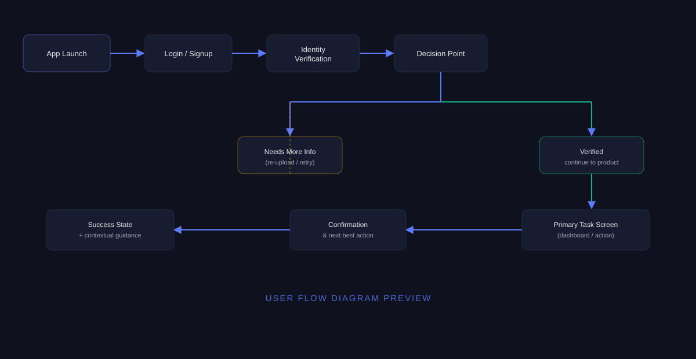
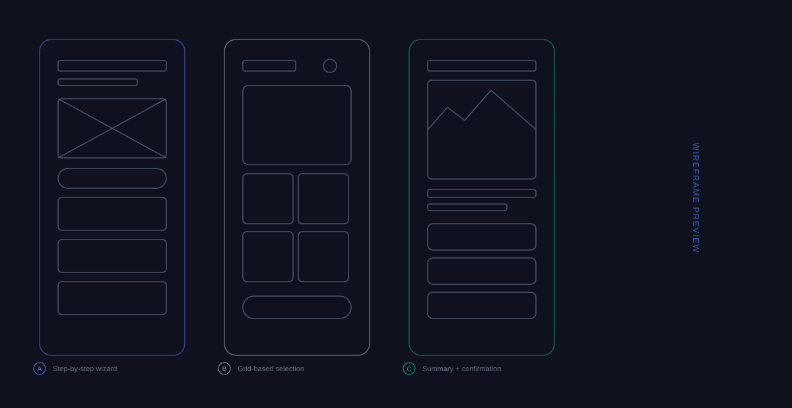
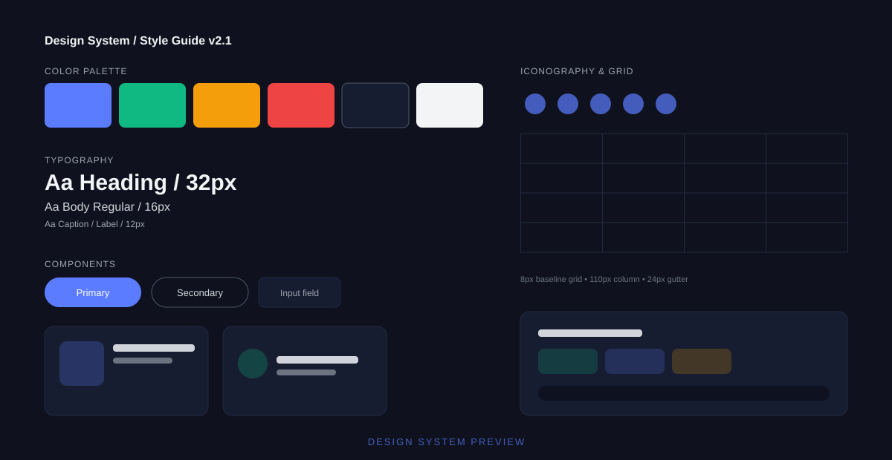

1. Project Overview
Background & Business Context
Bigul's trading revenue depended on transaction volume, but a large share of active traders never touched mutual funds — a product with steadier, recurring commission revenue and, more importantly, a natural fit for the long-term saving goals many of them already had.
The business case for cross-sell was strong, but the user mental model was the real obstacle: trading is short-horizon and market-watch driven, while mutual fund investing is goal-based and long-horizon. Bolting a fund-selection screen onto the existing trading nav risked feeling like a bank cross-selling a product nobody asked for.
Goals & Objectives:
- Reframe investing around goals instead of asking users to pick from thousands of unfamiliar schemes.
- Cross-sell contextually, not through generic banners that feel like an unrelated ad.
- Keep it inside one app so users never felt like they'd left Bigul to use a separate product.
Target Audience
The rollout targeted existing traders first, not new user acquisition:
Goal-Driven Savers (61%)
Existing traders with a specific savings goal — a child's education, a house down payment — who had never connected that goal to a financial product on Bigul.
Diversification-Minded Traders (39%)
Active traders who understood they were over-concentrated in equities and wanted a lower-effort way to diversify without researching funds themselves.
2. My Role & Collaboration
I owned the end-to-end experience for goal creation, fund discovery, and SIP setup, and was responsible for making sure this felt like a natural extension of Bigul rather than a bolted-on product.
- Product Manager: Defining which trading behaviors (a closed profitable position, an idle cash balance) were appropriate, non-intrusive moments to introduce a goal-based prompt.
- AMC Partnerships Team: Understanding which fund categories carried simpler risk profiles suitable for surfacing to first-time MF investors versus which needed more disclosure.
- Compliance: Ensuring risk labeling on every fund card met SEBI riskometer requirements while still being understandable in one glance.
- Engineering: Scoping a goal-progress tracking model that could pull in both mutual fund and existing trading portfolio value for a single combined progress view.
3. Research & Discovery
I benchmarked goal-based investing UX from established platforms and interviewed twelve existing Bigul traders who had never used the platform's fund offerings, to understand exactly why not.
Competitive Benchmarking
| Platform | Discovery Model | Goal Framing | SIP Setup Time |
|---|---|---|---|
| Legacy Fund Platform A | Raw scheme list (Poor) | None | 8+ minutes |
| Modern Goal-Based App B | Curated collections (Good) | Explicit goal calculator | 2-3 minutes |
| Bigul (Pre-redesign) | Not available to retail users | None | N/A |
User Persona & Key Pain Points
Meet Meera, a 35-year-old working mother and active Bigul trader who wants to start saving for her daughter's education but has never opened a mutual fund:
Scheme Overload
Faced with thousands of nearly identical-sounding fund names, Meera had no confident way to narrow down which few actually mattered for her goal.
No Connection to Her Actual Goal
Every fund page showed 5-year returns and star ratings, but nothing connected those numbers back to "will this get my daughter through college."
Fear of a Second, Unfamiliar App
Meera assumed mutual fund investing would mean downloading and learning an entirely separate app, which she'd been putting off for over a year.
Product Thinking Insight:
Users like Meera didn't need more fund data — they needed less of it, organized around a question they already knew the answer to: what am I saving for, and by when. Fund selection should be the output of answering that question, not a separate research task.
4. Problem Definition
The Challenges & Constraints
Every fund recommendation had to remain compliant and could not be framed as personalized financial advice unless it came from a licensed advisor flow — a hard legal boundary that shaped how "curated" our collections could appear.
5. Design Process
I mapped the journey from "I have a savings goal" to "my SIP is running" as a single continuous path, deliberately avoiding a separate fund-research detour in the middle.

Fig 1. Goal-to-SIP flow showing the calculator, curated collection, and setup wizard in sequence.From Low-Fidelity Wireframes to Iterations
The first version of the "curated collection" concept still displayed 15-20 funds per goal category, which testers described as "not really curated." We cut this down aggressively and moved the rest behind a deliberate second tap.

Fig 2. Wireframe iteration reducing the default fund list from 15-20 options to a top-3 recommendation.Design Rationale:
Fewer defaults, not fewer options: Showing only the top 3 funds per goal type by default, with a clearly labeled "See all 18 options" expansion, kept the decision from feeling paralyzing while still respecting users who wanted to dig deeper.
6. Visual Design System
Mutual Fund extended Apex with a "Goals" visual pattern — progress rings, plain-language risk labels, and fund cards designed to answer "does this fit my goal" before "what's the star rating."

Fig 3. Goal progress rings, plain-language risk labels, and the curated fund card component.Design Tokens Overview
Goal Progress Rings
A circular progress indicator combining SIP contributions and existing trading portfolio value against a single target amount and date.
Plain-Language Risk Labels
SEBI riskometer categories translated into one-line explanations ("Moderate risk — value can dip 10-15% in a bad year") alongside the required official label.
Curated Fund Cards
Each card leads with "Why this fits your goal" rather than leading with historical return percentage, which moved to secondary position.
WCAG 2.1 Accessibility Considerations:
- Progress Ring Alternatives: Every goal progress ring is paired with an explicit text readout ("62% of ₹5,00,000 goal") for screen readers.
- Risk Labels: Risk level is always communicated in text, never through color alone, meeting the same standard used across the rest of Apex.
7. High-Fidelity Walkthrough
The Goal Calculator
Instead of starting with "which fund do you want," the flow starts with "what are you saving for, how much, and by when" — three simple inputs that quietly determine everything shown afterward.
The Solution: A conversational three-field calculator ("I want to save ₹___ for ___ by ___") that instantly generates a monthly SIP estimate and a matching curated fund collection.
Contextual Cross-Sell Prompts
Rather than a generic in-app banner, mutual fund prompts appear at specific, relevant moments — after a user closes a profitable trade, or when cash sits idle in their account for more than a few days.
The Solution: A dismissible, contextual card ("You just closed a ₹12,000 gain — put some of it toward a goal?") that ties the suggestion directly to an action the user just took.
8. Product Strategy & Trade-offs
Cross-sell features live or die on whether they feel helpful or intrusive — this shaped nearly every strategic decision.
Business Growth Pressure vs. User Trust
The Conflict: The business wanted maximum visibility for the new fund offering across the app; overexposing it risked training users to ignore it entirely, or worse, feeling upsold.
The Strategy: We limited prompts to a small set of contextually justified moments instead of persistent banners, and measured attach rate against prompt fatigue in a controlled rollout before expanding placement.
MVP Phase vs Future Roadmap
The MVP shipped goal creation, curated collections, and SIP setup. The roadmap includes automated goal rebalancing suggestions and a combined net-worth view spanning trading, mutual funds, and linked bank balances.
9. Challenges & Solutions
Challenge: High abandonment at the fund-selection step
The Problem: Early beta data showed users completing the goal calculator step at a strong rate, then dropping off noticeably once they reached a collection screen still showing 15-20 fund options.
Design Iteration: We reduced the default view to the top 3 recommended funds per goal type, ranked by category fit rather than raw historical returns, with additional options available one tap away.
The Result: Fund-selection-to-SIP-setup completion improved noticeably once the default choice set was cut down.
10. Impact & Results
The goal-based investing experience delivered measurable cross-sell gains within the first quarter of rollout:
Before vs. After Comparison
Previous Experience
- No mutual fund access for retail users
- No connection between goals and products
- Trading-only portfolio view
- No structured cross-sell moments
Redesigned Experience
- Goal calculator drives fund discovery
- Curated, top-3-by-default collections
- Combined trading + fund progress view
- Contextual, action-triggered prompts
11. Tools & Tech
12. Design Gallery
Click on any of the screens to open a full-resolution interactive lightbox preview.
13. Key Learnings
Designing a cross-sell feature that users actually want taught me to think about timing and framing as much as layout.
Don't build a second app inside the app
Reusing Bigul's existing navigation and visual language made the fund experience feel like a natural extension, not a bolted-on acquisition from a different product team.
Goal framing beats performance framing
Leading with "does this fit your goal" instead of "here's the 5-year return" made fund selection feel like a decision users were equipped to make themselves.
Cross-sell timing matters more than placement
A contextual prompt tied to a just-completed action consistently outperformed a persistent, prominently placed banner — relevance beat visibility.